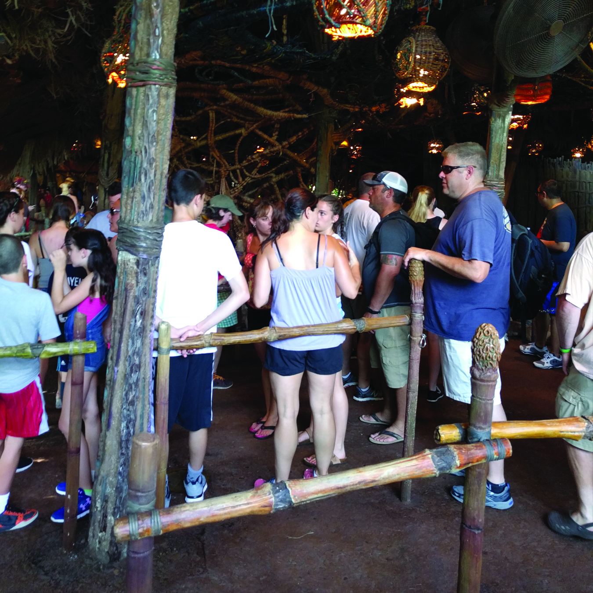

Theme parks are environments that encapsulate retail stores, attractions, rides, and characters, all wrapped together with a made-up story to create an emotional story for guests. In order to tell this story, parks attempt to integrate parts of the story in all aspects throughout the park.
While theme parks have begun to embrace more digital applications like park-specific mobile applications for maps and queue times, or more complex park-wide integrations like the Disney MagicBand, there has not been a digital approach designed for alleviating the tedium moments in the queue. Queues are an inevitable part of a guest’s experience in theme parks.
 |
|
|
An avatar is the digital representation of a user used in digital applications, often designed by the user themselves. It is used to represent the same user in the digital space. Players tend to build avatars that align with their ‘ideal selves’ (Duchenaut, Wen, Yee, & Wadley, 2009). By giving a player the power to personalize their avatar, this leads to players identifying more closely with the game, as well as take ownership of themselves in the game (Ondrejka, 2004). Klimmt, Hefner, & Vorderer also recognized that customization amplifies the identification with the character, and therefore, increases enjoyment of the game (2009). When a user can actually see themselves as the avatar, they enjoy the game more fully.
The survey was live for 30 days at which point 58 responses were collected. Out of the 58 responses, 3 responses were under the age of 18, and were completely removed from the results.
Three hundred and eighty-three guests were recorded during the site visit. These results were broken down into nine main categories.
In order to best engage and cultivate an emotional bond between the user and the avatar, it is recommended that an avatar system, known as AvatarMe, be implemented as a park-wide application. AvatarMe will be part of the pre-park experience, the park experience itself, and the post-park experience to emulate the ideas of the five E’s of user experience: entice, enter, engage, exit, and extend.
The above illustrates how the system could look, the tabs show the different lands, while the right panel shows the different costumes that the guest can collect, as well as costumes they have not yet earned. Guests can see that if they were to queue in line for the Frozen Ever After Ride at Epcot, they could play games in order to earn the Elsa, Anna, and Olaf costumes for their avatars. This is to create incentive for the user to visit the other rides and parks throughout Disney World.
The enter stage happens when the guest physically enters the part and is able to interact with the system and other users in the park.
The wristband contains an RFID, an accelerometer, and 2 buttons for interactions. The RFID allows the system to recognize when a wristband is being used for which ride (and which specific ride contact point), as well as linking the activity back to a user. The RFID chip will also be used to determine the location of the bands at all times to ensure that guests return the band at the end of their visit.
The engage stage is the stage where the application attempts to engage guests in using AvatarMe by ensuring that the system is both inviting and simple to use. The guest can be motivated to use the system through its accessibility, collecting rewards, and the social aspect. By engaging the guest, they build a sense of commitment to the character that they are playing, to the community, as well as to the game as a whole (Boudreau, 2007).
Games designed for the wristband system must be simple to learn and quick to play.
Payment services must be integrated throughout the park to ensure accessibility and convenience for guests.
Merchandising options is another important consideration of the engage stage. Since these digital avatars exist only in the digital realm, there is an opportunity to make them into real figurines that guests can purchase and bring home. This would encourage guests to find their favourite costumes and outfits throughout the park.
The exit stage is one of the final stages – it is how the experience appears to end for most users. This occurs when the guest has finished with the day (or trip) at the park, and has finished their last interaction with the avatar system. Prompting the guest to share their avatar through social media will help grow the platform, and create a community. Sharing content with people out of the trip can actually trigger reflection and a new interpretation of the current experience (Moores, 2003). As part of the exit stage of each application interaction or screen interaction is reminding guests how they can change their avatars outfits as soon as they earn a new outfit, and making it easy for them to share.
The extend stage is the stage that happens after the guest has left the park. The extend stage is just as important as the beginning engagement stages because players still feel connected to their avatars far after they have stopped playing the game (Boudreau, 2007). Customization increases the value of the character for the player. In Turkay’s study, she observed that users had an increased attachment over sessions – the more that the player interacted with the avatar; the more likely they were to come back and interact with the avatar again (2013).

Hi!
I'm currently a student at Ryerson University, finishing my thesis for my Masters of Digital Media.
I'm a graphic designer who focuses on the human experience.
Please feel free to email me about my research, or get more information about what I do!
If you'd like to view my portfolio, direct yourself here.
Some acknowledgments are in order for my thesis to be possible.
First and foremost, my parents, who have supported me the entire way and always believed in providing me with the opportunities to explore my dreams and aspirations – thank you.
To all my friends and MDM colleagues who supported me along the way, thank you for keeping my spirits up. In particular, Madeline So, for always being there for me – thank you; Steve Cober, for bouncing ideas off of and traveling together to Florida – twice! – thank you; and James Zhang, for supporting me, editing my paper, and all the late nights listening to me – thank you.
To my professors, advisors, Michael Carter, Alex Ferworn, and Sonya Taccone: for aiding and advising me, and pointing my research in the right direction – thank you.
Last, but most definitely not the least, my supervisor, Dr. Kathryn Woodcock, whose help was absolutely invaluable during the entire process. When she introduced me to the world of theme parks I would have never imagined that I would return to Florida multiple times in a single year or eventually write my research paper about this amazingly deep world - so for that, and so much more, thank you.